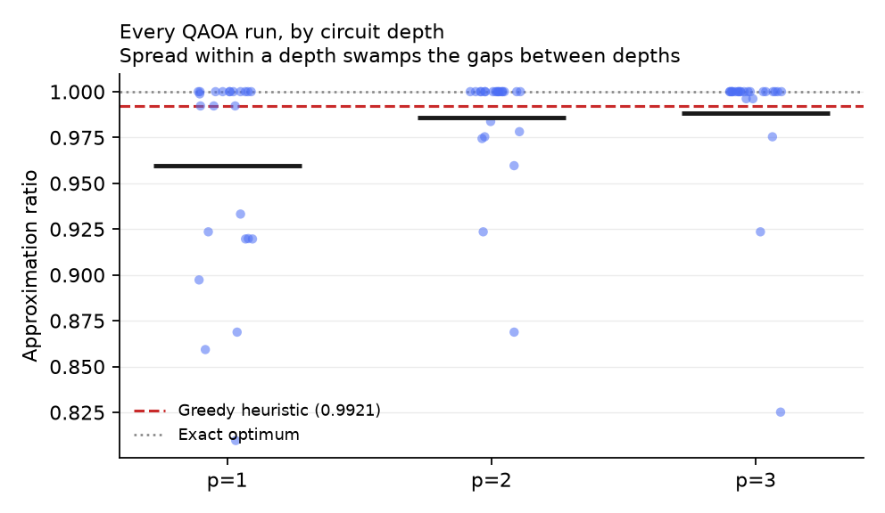
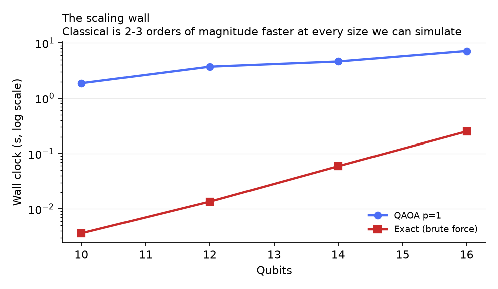
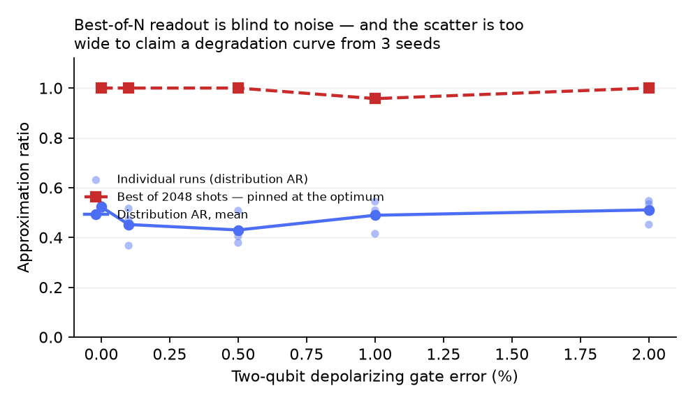
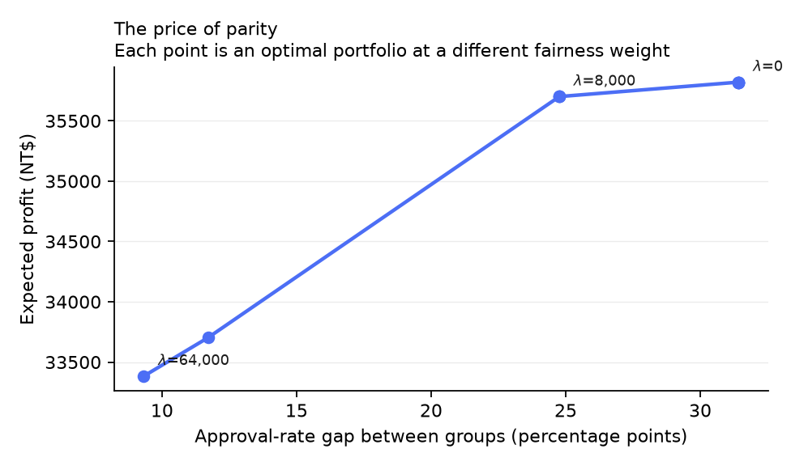
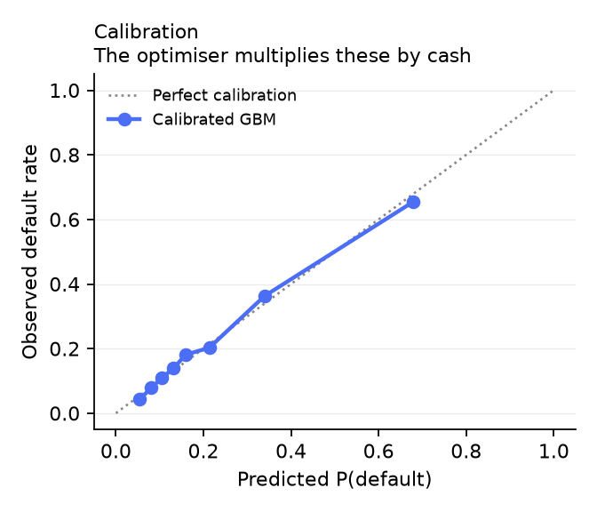
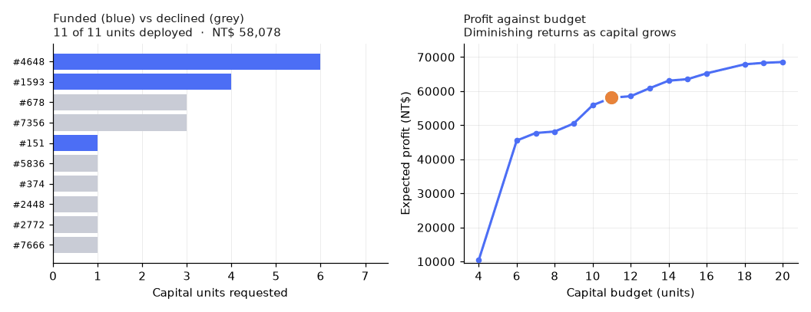
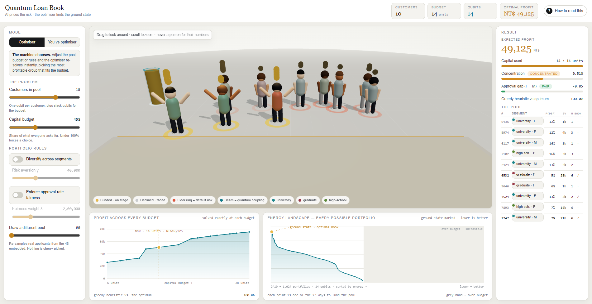

An AI model prices the default risk of 30,000 real credit-card customers. Those calibrated probabilities become the coefficients of a QUBO, which becomes an Ising Hamiltonian, which QAOA solves to choose which borrowers a bank should fund under a fixed capital budget — with diversification and approval-rate fairness built into the objective. The classical-versus-quantum comparison was run honestly. Classical won at 14 qubits, and this report says so.
Classical credit scoring answers how risky is this customer. It does not answer which combination of customers should we fund when we cannot fund them all. That second question is a 0-1 knapsack with quadratic side-terms — NP-hard, natively binary, natively quadratic — and it is exactly the shape of problem a quantum optimiser is built for. This project builds the full pipeline, measures it honestly, and reports what it found.
| Question | Answer | Number |
|---|---|---|
| Does the mapping work end to end? | Yes. QAOA reaches the exact optimum on 56% of runs and averages a 0.979 approximation ratio. | 0.9789 |
| Does quantum beat classical at this size? | No. Exhaustive search is about 125× faster and exact; a greedy heuristic is faster still and scores 0.9986. | 7.5 s vs 0.06 s |
| Which QAOA depth is best? | Cannot be told at this scale. Within-cell scatter (0.021) is six times the between-depth spread (0.0036). | 0.0211 / 0.0036 |
| Would it survive hardware noise? | Inconclusive. The sweep's within-level scatter exceeds its trend; resolving it needs ~104 seeds per level. | 0.1365 / 0.0268 |
| Is the allocation robust to the pricing assumptions? | Allocation yes (97.5% overlap near baseline); the positive-EV screening in front of it is not (0% full-pipeline overlap). | 97.5% / 0% |
| What does fairness cost? | Priced, not asserted: closing the approval gap from +31% to +9% costs 6.8% of expected profit on the frontier instance. | NT$ 2,437 |
The positioning in one sentence. We demonstrate a correct, tested AI→quantum mapping for a real lending decision, and we measure exactly where it stands today: competitive on quality, hopeless on speed at 14 qubits, with the published crossover for QAOA sitting at hundreds of qubits [8]. A fabricated quantum win is the thing that does not survive a judge's first question.
Most hybrid hackathon projects run the AI and the quantum part in parallel: train a classifier, then train a quantum classifier on the same task, then compare two demos bolted together. Here they run in series. The classifier's output literally parameterises the cost Hamiltonian. Remove the AI and there is no optimisation problem left to solve.
30,000 Taiwanese credit-card accounts
↓
calibrated GBM → P(default) per customer
↓
EV = P(repay)·interest − P(default)·LGD·exposure ← ML output becomes objective coefficients
↓
QUBO: max Σ EV·x − γ·concentration(x) − λ·parity_gap(x)² s.t. Σ units·x ≤ budget
↓
Ising Hamiltonian → QAOA ansatz → measured portfolio
Theme 25 of the IEEE Quantum AI Hackathon 2026, Optimization / Finance track, reads: "Portfolio / resource allocation optimizer — AI predicts returns from history → QAOA picks the best subset under a budget constraint → live demo: enter a budget, get the optimized selection." [19] The brief asks for four deliverables: a working AI model, a single well-scoped quantum component on a simulator, a live demo, and a one-page comparison of where the quantum mapping helps and where it does not.
A lender must decide which subset of loan applicants to fund when its capital is smaller than the total it could lend. Each applicant i carries a default probability pi, an interest gain if repaid, and a loss if they default. The lender maximises total risk-adjusted expected value subject to a fixed capital budget, while controlling concentration risk (too much capital in one customer segment) and approval-rate disparity between demographic groups.
Formally this is a 0-1 knapsack with quadratic penalty terms [14]. It is NP-hard, the decision variables are natively binary, and the penalties make the objective natively quadratic — the three properties that make a problem a candidate for QUBO/Ising formulation [6,15].
A bank has a hundred people it could lend to but only enough money for, say, forty. Some borrowers are safer bets than others, and some ask for bigger loans. Which forty should it pick to make the most money without betting too much on one type of customer, and without unfairly turning away one group? Picking the best combination — not just ranking people — is a genuinely hard puzzle: every extra customer doubles the number of possible books. With ten customers there are 1,024 books; with three hundred there are more than there are atoms in the Earth.
Subset selection under a budget maps to an Ising Hamiltonian whose ground state is the answer. That is categorically different from running a quantum kernel on four PCA components, where the kernel is a similarity function nobody can motivate. The quantum component here has a job a classical solver also does, which is precisely what allows an honest comparison.
The dataset is Default of Credit Card Clients, UCI Machine Learning Repository dataset 350, donated by I-Cheng Yeh and first described in Yeh & Lien (2009) [1,2]. It holds 30,000 credit-card accounts from a Taiwanese bank, observed April–September 2005, with 23 predictors and a binary label for default on the next month's payment. It is released under the Creative Commons Attribution 4.0 licence. The loader in src/data.py downloads the official archive from the UCI URL on first run, so the repository does not redistribute the data.
| Property | Value | Used for |
|---|---|---|
| Rows | 30,000 | 21,000 train / 9,000 held-out test (stratified) |
| Default rate | 22.12% | Real observed base rate — not a stratified over-sample |
LIMIT_BAL | Credit limit, NT$ | Upper bound on exposure |
BILL_AMT1 | Latest statement balance | Exposure at default, clipped to [0, limit] |
PAY_0…PAY_6, BILL_AMT*, PAY_AMT* | Six months of repayment history | Classifier features |
AGE, MARRIAGE | Demographics | Classifier features |
EDUCATION | 1 graduate · 2 university · 3 high school · other | Customer segment for the concentration term |
SEX | 1 male · 2 female, unambiguous | Protected group for the parity term — excluded from the classifier's features |
The project started on UCI Statlog (German Credit) [4], the standard credit-scoring benchmark, and moved off it deliberately.
| German Credit | This dataset | |
|---|---|---|
| Rows | 1,000 | 30,000 |
| Vintage | 1973–75 West Germany | 2005 Taiwan |
| Default rate | 30% — a stratified over-sample, 700 good / 300 bad by construction | 22.1%, observed |
| Protected attribute | Sex not recoverable from the published coding | Sex coded unambiguously |
The last row decided it. Grömping (2019) [3] shows that German Credit's published coding is wrong: male singles and female non-singles share code A92, and in the published file code A95 (female : single) has zero rows. Any "female" group built from it is a mixed bag, so a fairness number computed on it measures nothing — and most published fairness work on that dataset uses exactly that variable. The over-sampled base rate also inflated every expected-value figure, so the money was never in realistic proportions.
The team is presenting in India, and the question is fair. There is no public Indian retail-lending dataset that combines real default outcomes, a row-level exposure, an unambiguous protected attribute and tens of thousands of rows under an open licence; the Indian datasets commonly found on data-sharing sites are either synthetic or unlabelled. The pipeline is loader-agnostic — every downstream stage consumes a scored table with default, group, sector and an exposure column — so an Indian lender's own book would drop in by replacing one function in src/data.py. The fairness term demonstrates a mechanism; it is not a finding about lending discrimination in Taiwan in 2005.
SEX and the derived group label are dropped from the feature matrix, so the classifier cannot condition on sex directly. Proxy effects through other columns are possible and are not claimed to be absent.The classifier is scikit-learn's HistGradientBoostingClassifier wrapped in CalibratedClassifierCV with sigmoid (Platt) calibration over five folds [10,11]. A tuned logistic regression is trained as the baseline. The split is 21,000 / 9,000, stratified on the label. Only test-set rows are ever scored for the optimiser, so no applicant the optimiser sees was used to train the model that priced them.
Why calibration matters more than accuracy here. The optimiser multiplies each probability by money. A model that ranks well but says 0.30 when the truth is 0.50 corrupts every coefficient in the Hamiltonian. The Brier score [12] and the reliability curve (§5.7) are therefore the metrics that matter, and AUC is reported for completeness.
| Model | AUC | Brier score | Note |
|---|---|---|---|
| Calibrated gradient boosting (used) | 0.780 | 0.135 | HistGBM + 5-fold sigmoid calibration |
| Logistic regression (baseline) | 0.715 | 0.146 | Standardised numeric features, tuned C |
| Base rate | — | 0.172 | Brier of always predicting 22.1% |
An AUC of 0.78 is normal for retail credit risk; human repayment is genuinely noisy. Boosting beats logistic regression here because it has 21,000 rows to learn from — on the 1,000-row German Credit data the ordering was reversed, which is itself an argument for the larger dataset.
Scaling APR and LGD together by any positive constant scales every EV by that constant, and a knapsack's argmax is invariant under positive scaling of its objective. So the portfolio depends on one free parameter, ρ, not two. The baseline is one point on that line, ρ = 3.33. This was confirmed empirically over 24 rescaling checks, not just by the algebra. Applicants with EV ≤ 0 are screened out before optimisation; a pool of n positive-EV applicants is then sampled for each instance and each is assigned a capital demand ui in units of NT$ 20,000, capped at 6.
src/portfolio.py expands the two penalties algebraically. Both are squared linear forms, so each folds into the objective at zero additional qubits — and together they are what makes the objective genuinely quadratic. A plain knapsack objective is linear and would produce no two-qubit couplings at all.
The capital constraint is an inequality. QuadraticProgramToQubo converts it to an equality by introducing an integer slack variable, then binary-expands the slack — costing ceil(log2(B + 1)) extra qubits. Hence:
Every doubling of the budget range costs another qubit. Discretising capital into coarse units is the lever that keeps the instance simulable, and it is a modelling decision, not a tuning knob. For the demo instance the resulting Hamiltonian has 105 Pauli terms; the p = 1 QAOA circuit has depth 78 and 182 two-qubit gates after transpilation.
The QUBO becomes an Ising Hamiltonian by the substitution x = (1 − Z)/2 [6,15]. QAOA [5] prepares |+⟩⊗n and alternates p layers of a cost unitary e−iγHC and a mixer e−iβΣX; the 2p angles are tuned by a classical optimiser (COBYLA [16], 200 iterations) to minimise the sampled energy, and the lowest-energy feasible bitstring among 2,048 shots is returned as the portfolio. Implementation: Qiskit 2.5.2, Qiskit Aer 0.17.2 (statevector backend with shot sampling through SamplerV2 and a preset pass manager), and MinimumEigenOptimizer from qiskit-optimization 0.7.0 [9]. Sampling is used rather than exact expectation on purpose: measurement is part of the concept being demonstrated, and it yields a ranked distribution of near-optimal portfolios — something a single MILP optimum structurally cannot provide.
| Solver | What it does | Role |
|---|---|---|
| Brute force | Enumerates all 2n portfolios, evaluates the objective, keeps the best feasible | Ground truth for the approximation ratio |
| NumPy eigensolver | Exact diagonalisation of the Ising Hamiltonian | Independent check that the QUBO encodes the same problem |
| Greedy | Fund by expected value per unit of capital until the budget is spent | The heuristic a bank would actually deploy — the baseline that matters |
| QAOA p = 1, 2, 3 | As above | The quantum module under test |
All four attack the same QUBO on the same instances. This compares optimisers, not two different classifiers.
Twenty-two automated tests run in CI. The load-bearing one, test_bruteforce_matches_qubo_diagonalisation, asserts that exhaustive enumeration and exact diagonalisation of the QUBO agree on every instance — if the converter's penalty weights were wrong, they would not, and every downstream number would be meaningless. Others pin the qubit-count formula, the scale invariance of §4.2, and that the penalised QUBO still matches brute force. One of them caught a real bug during development: the group label was changed in the parity metric but not in the QUBO builder, which silently made the fairness term constant. The fix introduced a single source of truth (PortfolioProblem.group_mask) that both consume.
Setup for §5.1–5.2: 8 independent instances × QAOA depths {1, 2, 3} × 3 QAOA seeds per cell, 2,048 shots, COBYLA maxiter 200, Qiskit Aer statevector simulator, 14 qubits (10 decision + 4 slack). Every table on these pages is generated from the CSVs in artifacts/.
| Solver | Approx. ratio (mean) | Worst | Std dev | Hit exact optimum | Wall clock (s) |
|---|---|---|---|---|---|
| QAOA p = 1 | 0.9771 | 0.9083 | 0.0317 | 50% | 5.2 |
| QAOA p = 2 | 0.9830 | 0.9172 | 0.0289 | 67% | 7.1 |
| QAOA p = 3 | 0.9764 | 0.9083 | 0.0319 | 50% | 10.1 |
| Greedy (value / capital) | 0.9986 | 0.9889 | 0.0039 | 88% | 0.0002 |
| Exact (brute force) | 1.0000 | 1.0000 | — | 100% | 0.0599 |

| Applicants | Qubits | Statevector (MB) | QAOA p=1 (s) | Exact (s) |
|---|---|---|---|---|
| 6 | 10 | 0.02 | 1.9 | 0.004 |
| 8 | 12 | 0.07 | 3.7 | 0.014 |
| 10 | 14 | 0.26 | 4.6 | 0.059 |
| 12 | 16 | 1.05 | 7.2 | 0.252 |
| extrap. | 28 | 4,295 | — | — |
| extrap. | 30 | 17,180 | — | — |
Statevector memory is 2n × 16 bytes. Thirty qubits needs 17 GB, more than a 16 GB laptop has. Classical exact search is two to three orders of magnitude faster at every simulable size; the published crossover for QAOA advantage is at hundreds of qubits [8].

Barkoutsos et al. [7] report that aggregating QAOA samples by the Conditional Value-at-Risk of the best α-fraction, instead of by their mean, converges faster and better on every combinatorial problem they tested, and it is what the strongest comparable repositories use. It is a one-parameter change in Qiskit. It was measured over 64 runs per setting (8 instances × 8 repeats).
| Aggregation | AR mean | AR worst | Std | Hit optimum | Seconds |
|---|---|---|---|---|---|
| CVaR α = 0.10 | 0.9894 | 0.8522 | 0.0260 | 78% | 4.5 |
| CVaR α = 0.25 | 0.9831 | 0.9140 | 0.0274 | 70% | 4.4 |
| CVaR α = 0.50 | 0.9788 | 0.9001 | 0.0327 | 58% | 4.3 |
| Mean (default, kept) | 0.9756 | 0.8132 | 0.0384 | 58% | 4.4 |
The best setting improves the mean approximation ratio by +0.0138, but the spread between settings is 0.0060 against a within-cell scatter of 0.0258 — the effect is about 4× smaller than its own noise floor, so the default was kept. This is not a contradiction of the paper: CVaR's advantage is largest on noisy hardware and on hard-to-optimise landscapes, and at 14 noise-free qubits the default already reaches the optimum 58% of the time, leaving little to recover. It is reported because adopting a technique on the strength of its citation, without checking it helps on one's own problem, is how unverified claims get into submissions.
A depolarizing two-qubit gate error was swept at 8 applicants, p = 1, 12 instances per level.
| 2q gate error | AR, best of 2,048 shots | AR, sampled distribution | P(feasible) | s |
|---|---|---|---|---|
| 0.000 | 0.9351 | 0.3172 | 0.616 | 3.1 |
| 0.001 | 1.0000 | 0.3200 | 0.629 | 65.4 |
| 0.005 | 0.9601 | 0.3683 | 0.605 | 68.7 |
| 0.010 | 0.9762 | 0.3656 | 0.591 | 64.8 |
| 0.020 | 0.9188 | 0.3683 | 0.547 | 62.9 |

Within-level scatter across seeds is 0.1365; the spread between error levels is 0.0268. The putative trend is about 5× smaller than its noise floor, so there is no degradation curve here the data entitles anyone to draw. Resolving it would take roughly 104 seeds per level, about 7.7 hours of noisy simulation.
The power calculation was itself under-powered. A 3-seed pilot was also inconclusive but estimated that ~8 seeds would settle it, so 12 were run. With 12 seeds the measured scatter came out ~2.5× larger than the pilot's estimate, and the requirement moved from ~8 seeds to ~104. The pilot had not merely failed to resolve the trend; it had underestimated its own error bars. Five means printed as a tidy descending curve would have looked far more impressive and would have been unsupported by the data.
| ρ = LGD / APR | LGD at 18% APR | Same-pool overlap | Full-pipeline overlap | Accounts funded |
|---|---|---|---|---|
| 1.50 | 0.27 | 0.581 | 0.000 | 2.9 |
| 2.00 | 0.36 | 0.775 | 0.000 | 3.1 |
| 2.50 | 0.45 | 0.850 | 0.000 | 3.1 |
| 3.33 (baseline) | 0.60 | 1.000 | 1.000 | 3.1 |
| 4.00 | 0.72 | 1.000 | 0.000 | 3.2 |
| 5.00 | 0.90 | 0.950 | 0.000 | 3.8 |
| 7.00 | 1.26 | 0.750 | 0.000 | 3.9 |
Holding the candidate pool fixed, a modest error in ρ leaves 97.5% of the portfolio unchanged, and across the whole swept range the overlap averages 82%. But run the full pipeline — where a different ρ also changes who clears the positive-EV screen — and the overlap collapses to 0%. That contrast is the useful finding: ρ barely affects which of the fundable loans to pick; it almost entirely determines who is fundable at all. The optimiser's output is stable against the pricing assumptions; the screening step in front of it is not, and a real lender would need to estimate ρ carefully. That is a credit-policy question, not an optimisation one.
Sweeping the fairness weight λ on a fixed instance traces the exchange rate between approval parity and expected profit. Each point is an optimal portfolio at one λ.
| λ | Expected profit (NT$) | Approval gap F − M |
|---|---|---|
| 0 – 2,000 | 35,821 | +31.4 pp |
| 4,000 – 16,000 | 35,701 | +24.8 pp |
| 32,000 | 33,702 | +11.7 pp |
| 64,000 | 33,384 | +9.3 pp |
Closing the gap from +31.4 to +9.3 percentage points costs NT$ 2,437, or 6.8% of expected profit. Across the 5-instance benchmark, λ = 20,000 moved the mean gap from −20.6 to −7.6 pp for a 1.5% profit cost. Fairness is priced, not asserted [21]. The diversification term behaves the same way: with γ on, the Herfindahl index of the demo book falls and the panel reports what that cost.


When the model says 30%, about 30% of those accounts default. This is the property the optimiser depends on, because it multiplies these probabilities by exposure and interest to produce the Hamiltonian's coefficients. A better-ranking but worse-calibrated model would produce a worse loan book.
The held-out test set is 9,000 accounts, stratified, never seen by the model. The 48 applicants embedded in the web dashboard and the pools drawn by the Streamlit demo are all test-set rows.
The measurement methodology found four problems in the project's own earlier claims. They are listed because a submission that has audited itself is more credible than one that has not, and because each one is a transferable lesson.
| Claim as first written | What the check showed | Action |
|---|---|---|
| "QAOA depth p = 2 is best on this problem." | A single QAOA seed per cell. Re-running with different transpilation ranked p = 2 worst. Within-cell scatter (0.0211) is six times the between-depth spread (0.0036). | Retracted. Three seeds per cell; the deliverable states that no depth is meaningfully best. |
| "Best-of-N readout is blind to gate noise" (it returned the optimum at every error level in the 3-seed pilot). | At 12 seeds best-of-N ranges 0.9188–1.0000 across the sweep, and both statistics move by less than the within-level scatter. | Retracted rather than kept because it read well. The sweep is reported as inconclusive with the seeds needed to resolve it. |
| "The portfolio is 0% robust to the pricing assumptions." | The first sensitivity run resampled the candidate pool for each ρ, confounding screening with allocation. | Separated into fixed-pool and full-pipeline measurements; the finding became the more useful one in §5.5. |
| Hard-coded prose: "QAOA beats the heuristic on both counts", "logistic regression beats boosting". | Both became false after the dataset change and the multi-seed benchmark. | All Deliverable-4 prose is now generated from the measured CSVs; the page cannot drift from the experiment. |
Two further defects were caught mechanically. A test caught the fairness term going constant after a label change (§4.6). And while preparing this report, currency labels reading "DM" — Deutschmarks, from the German Credit era — were found still attached to the fairness figure, the Deliverable-4 generator and the demo animation. They now read NT$. The numbers were always correct; the labels were not.
The methodological through-line. Every retraction above has the same shape: a small sample suggested an effect, a larger sample showed the effect was inside its own noise floor. The project's standing rule became report the within-cell scatter next to every between-condition difference, and claim nothing whose difference is smaller than its scatter.

app.py). The capital-budget slider re-optimises the loan book live; the funded portfolio is highlighted and the marker tracks the current budget on the profit curve. Every metric and control carries a tooltip explaining what it shows and what it means; a circuit tab shows the transpiled QAOA ansatz; results export to CSV. QAOA calls are pre-warmed and cached so the slider responds instantly.A deployable React + Three.js front-end (web/) for the same problem, built with Vite, React 18, TypeScript, React Three Fiber, drei, Framer Motion and GSAP [18]. Every borrower is a procedural 3D human figure on a bank floor. The page runs the exact solver on 48 real scored applicants in the browser, enumerating all 2n portfolios (instant at n ≤ 12) with the identical objective as src/portfolio.py. QAOA runs in the Python backend and is benchmarked against this exact answer there; the page says so in its "How to read this" drawer.

| Element | What it shows | What to say to a judge |
|---|---|---|
| Header KPIs | Pool size, budget in NT$ 20,000 units, qubit count (n + slack), optimal profit | "Fourteen qubits — ten customers plus four to encode the budget inequality. The budget, not the head-count, drives the qubit count." |
| The floor | Funded people step onto the lit stage with arms raised and a gold ring; declined people stand back, faded. Coin stacks = capital demand; red floor ring = default risk from the AI; outfit colour = segment. | "Every person is a real customer. The AI has already priced them — that's the red ring. The optimiser chose who steps on stage." |
| Beams | Teal beam between two funded people of the same segment (diversification on); plum beam between opposite groups (fairness on) | "Those are the ZZ couplings of the Hamiltonian. Expand a squared penalty and you get exactly those pairwise terms." |
| Profit across every budget | The optimiser solved exactly at every budget level; the gold dot is the current budget | "It bends over: diminishing returns. The first units fund the best customers; each extra unit buys progressively worse risk-adjusted value. A bank should set its budget at the knee." |
| Energy landscape | All 2n portfolios scored by the Ising Hamiltonian and sorted; lower is better; the gold point is the ground state; the grey band is over-budget books pushed up by the penalty; a plum line marks your own book in game mode | "This is the quantum idea in one picture. Lower energy means more profit by construction, so 'find the best book' becomes 'find the lowest point'. That point is the ground state — exactly what QAOA is built to find. QAOA never sees this picture; it has to find the dot without it." |
| Readouts | Expected profit; capital used; Herfindahl concentration with a diversified / concentrated / one-basket pill; approval gap F − M with fair / skewed / unfair; the cost of each rule against the unconstrained optimum; greedy vs. optimum | "Flip fairness on: the gap collapses and the panel tells you what it cost. We don't claim fairness — we price it." |
| The pool table | Every customer's segment, group, P(default), expected value, units and whether they are in the book; rows are clickable in game mode | "Hover a person or read the row — same numbers." |
| You vs optimiser | Click people to fund them, stay under budget, try to reach the ground state; the readouts show your book against the optimiser's and your position on the landscape | "Most people get to 85–90% and can't find the rest, because with ten customers there are 1,024 books and every extra customer doubles it." |
The dashboard is a locked viewport layout above 1,180 px (rails span the full height, stage over charts) and a stacked scrolling page below it. It ships as a static Vite build and deploys to Vercel by setting the root directory to web; deployment is currently held pending the team's decision.
src/make_deck.js from the same artifacts, geometry-checked numerically by src/qa_deck.py because the build machine has no renderer.| Component | Version | Note |
|---|---|---|
| Python | 3.14.5 | Only interpreter on the build machine |
| qiskit | 2.5.2 | qiskit-optimization requires qiskit < 3; QAOA and COBYLA moved into qiskit_optimization at 0.7.0, so tutorials importing them from qiskit_algorithms fail. Pinned deliberately. |
| qiskit-aer | 0.17.2 | |
| qiskit-optimization | 0.7.0 | |
| scikit-learn / pandas / numpy | 1.9.0 / 3.0.5 / 2.5.2 | |
| streamlit / matplotlib | 1.62.0 / 3.11.1 | |
| Web: react / three / @react-three/fiber | 18 / 0.169 / 8.17 | Vite 5, TypeScript, drei, framer-motion 11, gsap 3.12 |
py -3.14 -m venv .venv .venv/Scripts/python.exe -m pip install -r requirements.txt .venv/Scripts/python.exe run_all.py # everything end to end, ~40 min (benchmark + ablations dominate) .venv/Scripts/python.exe run_all.py --fast # regenerate figures and pages from existing results, ~20 s .venv/Scripts/python.exe -m pytest tests -q # 22 tests; the 3 QAOA tests are marked slow .venv/Scripts/streamlit run app.py # Deliverable 3, Streamlit cd web && npm install && npm run dev # the 3D dashboard
artifacts/*.csv and *.json. The tables in §5 of this report were transcribed from those artifacts at the commit named on the cover.| Experiment | Runs | Approx. time | Script |
|---|---|---|---|
| Quality benchmark | 8 instances × 3 depths × 3 seeds = 72 QAOA runs + classical references | ~10 min | src/benchmark.py |
| Scaling | 4 sizes, 10–16 qubits | ~1 min | src/benchmark.py |
| Noise sweep | 5 error levels × 12 seeds, noisy simulation ~24× slower | ~55 min | src/noise_ablation.py |
| CVaR ablation | 4 settings × 64 runs | ~20 min | src/cvar_ablation.py |
| Sensitivity | 7 values of ρ × 8 instances, fixed-pool and full-pipeline, + 24 rescaling checks | ~1 min | src/sensitivity.py |
SEX from the features does not rule out proxy effects.Why the negative result is the strongest part of the submission. The project ran the quantum-versus-classical comparison honestly, classical won, and the result is on the page — because a fabricated quantum win is the thing that does not survive a judge's first question, and a team that has retracted its own over-claims three times can be believed about the claims it kept.
| Path | Purpose |
|---|---|
| src/data.py | Downloads and loads the UCI dataset; derives default, group, sector, exposure and EV (APR 18%, LGD 60%) |
| src/ai_model.py | Deliverable 1: calibrated HistGBM + logistic baseline; writes artifacts/ai_metrics.json and scored_applicants.csv |
| src/portfolio.py | PortfolioProblem: objective, Herfindahl and parity penalties, QuadraticProgram → QUBO, qubit accounting |
| src/solvers.py | Deliverable 2: brute force, NumPy eigensolver, greedy, QAOA (SamplerV2, pass manager, optional depolarizing noise, CVaR) |
| src/benchmark.py | Quality benchmark (8 × 3 × 3) and scaling table; stability check for the noise floor |
| src/noise_ablation.py · src/cvar_ablation.py · src/sensitivity.py | The three ablations of §5.3–5.5, each with a --summarize-only mode |
| src/figures.py | Figures 1–5 from the CSVs |
| src/make_deliverable4.py · src/make_onepager.py | Deliverable 4 long form and the one-page A4 HTML, all prose data-derived |
| src/make_deck.js · src/qa_deck.py · src/make_demo_gif.py | The deck, its numeric geometry check, and the demo animation |
| app.py | Deliverable 3: the Streamlit demo |
| web/ | The 3D dashboard (Vite + React + R3F); web/src/lib/problem.ts is the in-browser exact solver, web/src/data/applicants.ts the 48 embedded real rows |
| tests/test_core.py | 22 tests |
| artifacts/ | Every measured CSV/JSON, the figures, demo.gif, dashboard.png |
| run_all.py · .github/workflows/ci.yml | End-to-end rebuild and continuous integration |
| README.md · PITCH.md · JUDGE_DEFENSE.md · CONCEPTS_EXPLAINED.md · EXPLAINING_THE_GRAPHS.md · NOTEBOOKLM_CONTEXT.md | Documentation and presenter material |
| DELIVERABLE_4.md · DELIVERABLE_4.html · PRESENTATION.pptx · REPORT.pdf | The submitted documents |